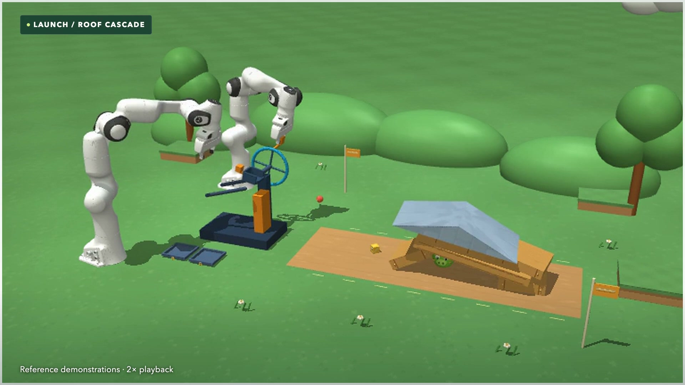

Predict what happens next.
Reason about contact, mass, friction, and motion. A projectile can roll an object, topple a structure, or fracture a glass barrier.
Launch · dynamics · stabilityFOUNDATION MODELS · ROBOTIC INTERACTION

The whole agent, in the loop.
A foundation-model agent interprets a goal, reads the scene, writes control code, and acts through a robot. Each action changes what it needs to do next.
Embodied Playground evaluates that complete loop under declared observation and tool constraints. Success requires reaching the goal while respecting task rules, physical limits, and execution budgets.
Read the benchmark framing ↗Reason about contact, mass, friction, and motion. A projectile can roll an object, topple a structure, or fracture a glass barrier.
Launch · dynamics · stabilityMaintain legal intermediate states, order dependent actions, and revise a plan as ammunition, object positions, and available options change.
Tower · assembly · household sequencesTrack poses and cube faces, align interlocking parts, and find grasps and placements that fit the robot’s reachable workspace.
Cube · Lock · bookshelf arrangementA shared interaction interface
Embodiment-specific actions. Independent evaluation.describeRead the task, robot, and action contract.
observeReceive permitted images and state.
stepExecute an action and advance physics.
finishEnd the episode and evaluate its evidence.
Observe again, track progress, and revise the plan. Observation reads do not advance physical time.
Breadth, with a defined evaluation cost.
A curated selection of 100 environments across five suites and 16 task types. Four prescribed conditions per task yield 400 evaluation instances at each fixed setting.
Aim · Causal · Glass · Rules
Trajectories, indirect effects, fracture, and target constraints. 21Plan · Physics · Dex
Legal rearrangements across planning depths and physical variations. 16Assemble · Disassemble · Dex
Partial and complete interlocking assembly with grippers and hands. 12Rubik · Pocket
Cube solving, prescribed turns, regrasping, and reorientation. 17Tidy · Long · Precise · Dynamic
Bookshelves, household sequences, fine manipulation, and motion.The lower-workload half, with all 16 types represented.
The complementary half, selected from task definitions rather than model scores.
Ten Easy and ten Hard tasks for compact diagnosis. Pilot evidence informed selection; it is not an unbiased estimate of EP-100.
The full collection: Launcher 100 · Hanoi 120 · Pocket cube 20 · Rubik’s cube 60 · Kongming lock 60 · Bookshelf 20 · ManiSkill 30. Simulators: MuJoCo, Isaac Lab, and ManiSkill.
One loop. Different demands.
Sixteen types organize the EP-100 selection. Videos show reference executions or reproductions and their recorded outcomes, separately from the scored Codex trials.
Browse every task group and robot, with task details, task videos, and evaluation guides.
No task types match this combination. Try another suite or robot.
Exact task membership, difficulty split, and EP-20 inclusion from the paper. Download index JSON ↗
Two models. A broad test.
Results for GPT-6-Astra and Claude · Opus-5.5-extra. The paper reports the first two valid opportunities per condition, stopping at the first success.
Headline scores give each suite equal weight. Pass@2 includes first-attempt successes; the four conditions are distinct instances, not retries.
Declared access. Physical success.
Access levels govern eligible observations and tools, independently of task difficulty. Exact grants are declared for every run; a higher level does not automatically supply a controller.
RGB-D requires an authorized profile and environment support. Privileged observations remain read-only and preserve the same action interface and task rules.
RGB, proprioception, calibration, and public task information. Python, NumPy, Pillow, and the agent’s own algorithms.
self-written algorithmsL0 plus explicitly granted reconstruction, geometry, inverse-kinematics, planning, and symbolic tools.
declared tool grantsL1 plus explicitly granted pretrained models that propose or refine grasps and contacts.
proposal assistanceL2 plus selected simulator fields exposed by a declared read-only observation profile.
state accessPrescribed variations keep the goal and rules fixed. EP-100 has 400 conditions; each gets one attempt in the base protocol, or up to two valid opportunities in the declared Codex experiment.
The first projectile is preloaded. Subsequent reloading remains part of multi-shot tasks. Ground-start demonstrations are outside these reported scores.
The independent evaluator checks the executed trajectory, legal interactions, final state, and task-specific release and dwell requirements. Calling finish grants no extra settling time.
The Codex experiment allows 30M tokens and 100 images per attempt, alongside task-specific physical and wall-time limits. These are allowances, not measured usage. Pretrained action controllers and reference solutions are excluded from agent evaluation.
See the interaction, know its source.
Reference executions and reproductions show the interaction through its recorded outcome. Labels identify the demonstrated task, playback speed, and evidence limits.
Home examples show L1 / Fetch ending in failure, P5 / Panda succeeding, and D1 / Panda succeeding. Each clip preserves the complete recorded sequence in at most 60 seconds; speed badges identify accelerated playback.
Sharpa cube clips demonstrate calibration, not a complete solve; Sharpa lock A06/D06 demonstrate key-only subtasks.
BUILD WITH US
Bring a model, declare its observation and tool access, and evaluate how it turns reasoning into robotic behavior.
We will continue to expand the environments and update the demonstration videos.